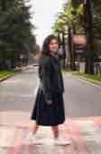
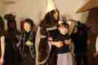

Боится, цепляется, плохо спит
Страхи, ночные пробуждения, нежелание оставаться без родителя, сильное напряжение перед школой или садом.
Консультации для родителей, которые замечают тревогу, истерики, агрессию, сложности в школе или резкие перемены в поведении.
Я помогу спокойно разобраться, что происходит, нужна ли работа с ребёнком и какие первые шаги можно сделать дома уже сейчас.
Родителю не нужно заранее знать диагноз или “правильный” запрос. Достаточно заметить, что ребёнку или семье стало сложнее.
Страхи, ночные пробуждения, нежелание оставаться без родителя, сильное напряжение перед школой или садом.
Ребёнок быстро срывается, кричит, дерётся, спорит, а привычные способы успокоить уже не работают.
Падает мотивация, появляются конфликты, слёзы из-за уроков, ощущение “я не справляюсь”.
Семья проходит через изменения, новую страну, язык или школу, и ребёнку нужна опора в адаптации.
Сложно говорить без конфликта, много раздражения, секретов, усталости или резких перепадов настроения.
Работаю с импульсивностью, трудностями саморегуляции, сенсорной чувствительностью и поведением, которое сложно выдерживать дома или в школе.
Хочется понять причины поведения и получить конкретные шаги без обвинений и чувства вины.
Если узнали свою ситуацию — можно начать с короткого звонка. За 15 минут станет понятнее, какой формат нужен.
Оставить заявку →Детское поведение часто говорит о напряжении, потребности, перегрузе или навыке, который пока не сформирован. На консультации мы не ищем виноватых — мы разбираемся, что поддержит ребёнка и семью.

Работаю бережно: на стороне ребёнка и родителей одновременно. Моя задача — перевести поведение ребёнка на понятный язык и дать семье опоры.
Вместо “он ленится”, “она манипулирует” или “с ним невозможно” мы ищем, чему ребёнку важно научиться и какая поддержка ему нужна.

Мы не “исправляем” ребёнка, а выбираем навык: успокаиваться, просить о помощи, выдерживать ошибку, говорить о злости, начинать дело.
Учитываю эмоции, тело, школу, отношения, нагрузку, семейные изменения и возрастные особенности.
После встреч даю понятные наблюдения и рекомендации: что делать дома, что отслеживать, как говорить с ребёнком.
15 минут бесплатно: вы рассказываете ситуацию, я уточняю детали и говорю, с чего лучше начать.
Начинаем с пробной встречи: ребёнок спокойно знакомится со мной и понимает, подходим ли мы друг другу. Часто уже после первой встречи ребёнок соглашается продолжать.
Вы получаете фокус работы: что можно делать дома, что отслеживать и сколько примерно понадобится встреч.
После встречи — текстовые рекомендации. Между сессиями можно задавать вопросы в чате.
15 минут, чтобы понять запрос и выбрать формат.
0 ₽ ЗаписатьсяРазбор ситуации, рекомендации и план первых шагов.
60 минутПробное знакомство, игровая и разговорная работа с эмоциями, поведением, тревогой.
от 2700 рублей / 80 лариРегулярные встречи, отчёты после сессий и поддержка в чате.
формат обсуждаем“Мы впервые поняли, что ребёнок не вредничает, а не справляется с тревогой. Стало меньше крика и больше понятных шагов”.
“После консультаций стало легче говорить с подростком без давления. Появилось ощущение, что мы снова команда”.
“Очень ценно, что после встречи был текстовый план. Я не вышла с ощущением ‘ну поговорили’, а знала, что делать дома”.
Имена детей изменены, личные детали не публикуются.
Напишите коротко, что происходит. Я вернусь с уточняющими вопросами и предложу ближайший понятный шаг.
Да. Часто первая встреча проходит только с родителем: так безопаснее для ребёнка и помогает собрать контекст.
Зависит от запроса. После первой консультации я дам реалистичный ориентир и предложу формат работы.
Мы не заставляем. Начинаем с родителя и ищем способ помощи, который не усиливает сопротивление.
Да. Я соблюдаю конфиденциальность и этические границы. Родителям даю важные для поддержки рекомендации, не нарушая доверие ребёнка.
Если вижу, что нужна консультация невролога, логопеда, нейропсихолога или врача, я честно скажу об этом и помогу сориентироваться.